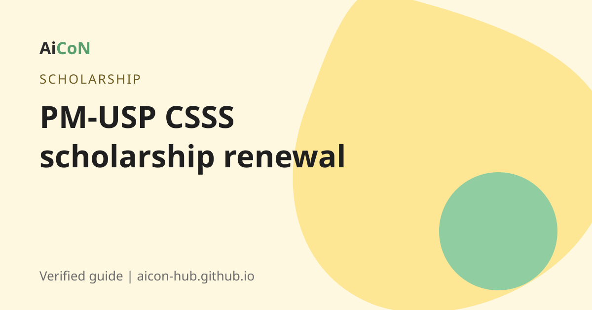

PM-USP CSSS scholarship: who gets Rs 12,000 a year and how to renew
PM-USP CSSS is a central scholarship for college and university students with high Class 12 marks and limited family income. Renewal for 2026-27 is on NSP. The official pages show two different closing dates, so read the deadline section.

What is it?
The PM-USP Central Sector Scheme of Scholarship for College and University Students (CSSS) is a merit-cum-means scholarship of the Department of Higher Education. You apply on the National Scholarship Portal (NSP), scholarships.gov.in.
Who can get it? (fresh applicants)
From the official guidelines and FAQ:
- You are above the 80th percentile of successful candidates in your stream from your Class 12 board.
- You study a regular degree course. Correspondence or distance mode is not allowed.
- Your college is recognised by AICTE or the regulator for your course.
- Family income is up to Rs 4.5 lakh a year. An income certificate is needed only for fresh applicants.
- You do not receive another scholarship at the same time.
How much?
From the guidelines: Rs 12,000 a year at graduation level for the first three years, and Rs 20,000 a year at post-graduation level. For technical courses such as B.Tech, the scholarship is up to graduation level only: Rs 12,000 a year for the first three years, and Rs 20,000 in the fourth year.
Renewal rules
To renew in each year of study you need at least 50 percent marks in the annual exam. The guidelines also set an attendance condition. The earlier post said 75 percent attendance, which fits the lines we read.
How to apply or renew, step by step
- Open scholarships.gov.in.
- Fresh applicant? Complete the One Time Registration (OTR). It stays valid for your whole academic career.
- Log in and choose the PM-USP CSSS scheme, fresh or renewal.
- Fill in the form. Your documents are checked through DigiLocker where available.
- Submit. Then your institute and the state nodal agency verify the application.
- Track the status on NSP.
Cost, eligibility and limits
| Cost to apply | Free. |
|---|---|
| Rate | Rs 12,000 a year (graduation), Rs 20,000 a year (post-graduation), per the guidelines. |
| Who | Class 12 toppers above the 80th percentile, family income up to Rs 4.5 lakh. |
| Limits | Scholarships are allotted to state boards by quota. Not every eligible student gets one. |
Stay safe
- Apply only on scholarships.gov.in.
- Never pay an agent.
Frequently asked questions
What is the income limit?
Rs 4.5 lakh a year, from the guidelines.
How much is the scholarship?
Rs 12,000 a year at graduation level and Rs 20,000 at post-graduation level.
What is the renewal deadline?
NSP pages show 30 September 2026 on one page and 31 October 2026 on the homepage. Check your NSP login.
Can I get it with another scholarship?
No. You cannot hold another scholarship alongside it.
I study B.Tech. What do I get?
Rs 12,000 a year for the first three years and Rs 20,000 in the fourth year.
Sources: National Scholarship Portal, NSP All Scholarships (dates), CSSS guidelines, CSSS FAQ. Checked 6 October 2026.